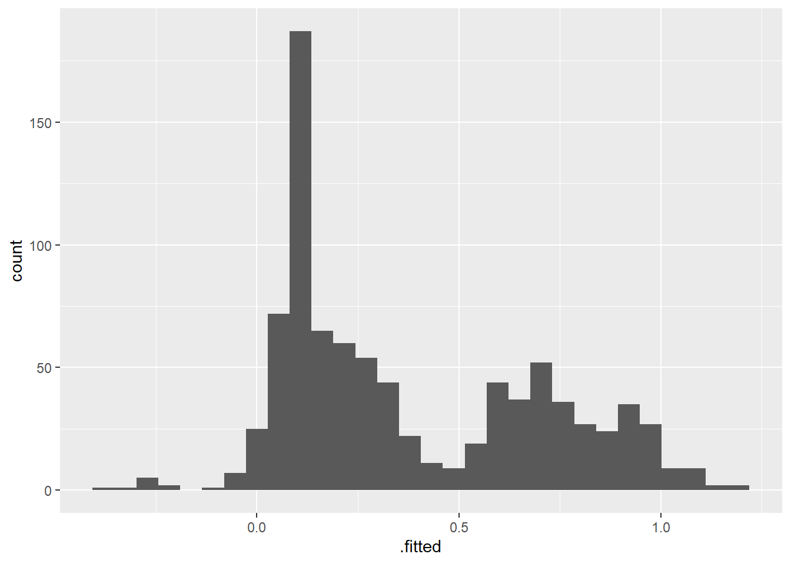

library(vroom)
library(here)
library(janitor)
library(dplyr)
library(rsample)
library(recipes)
library(stringr)
library(broom)
library(magrittr)
library(yardstick)
library(tibble)
vroom(here("data", "train.csv")) %>%
clean_names() -> titanic_train
vroom(here("data", "train.csv")) %>%
clean_names() -> titanic_testingThere’s a bit of a conversation on Twitter whether to use linear models or logistic models for estimating effect sizes in the case of binary response variables. I wondered if linear models can work for prediction problems with binary response variables, since there may be cases where the latent probability is linearly related to the features.
So I thought I’d do a little benchmark between different link functions for regression-based classifiers for the Titanic problem, based on the tidymodels packages.
Preprocessing steps are taken from Megan Risdal’s R kernel on Kaggle, Exploring the Titanic Dataset, with the major change being that I use bagging imputation instead of MICE imputation for the Age column.
recipe(titanic_train) %>%
step_mutate(survived = survived, role = "outcome") %>%
update_role(pclass, age, sib_sp, parch, fare,
new_role = "predictor") %>%
step_mutate(embarked = as.factor(embarked),
sex = as.factor(sex),
fsize = parch + sib_sp + 1,
title = gsub('(.*,)|\\s|(\\..*)', "", name),
title = str_trim(title),
fsize_d = case_when(
fsize == 1 ~ "singleton",
fsize < 5 & fsize > 1 ~ "small",
fsize > 4 ~ "large"
),
role = "predictor") %>%
step_impute_bag(age,
impute_with = imp_vars(-passenger_id,
-name,
-ticket,
-cabin,
-survived)) %>%
step_unknown(title) %>%
step_mutate(title = ifelse(is.na(title), "unknown", title)) %>%
step_mutate(child = as.factor(age < 18),
mother = sex == "female" & parch > 0 & age > 18 & title == "Miss",
role = "predictor") %>%
step_other(title, threshold = .05) -> rec
trained_rec <- prep(rec, training = titanic_train)
titanic_training <- bake(trained_rec, new_data = titanic_train)
titanic_testing <- bake(trained_rec, new_data = titanic_testing)I then fit linear and non-linear models:
formula <- survived ~ pclass + sex + age + sib_sp + parch +
fare + embarked + as.factor(title) + fsize_d + child + mother
lm(formula, data = titanic_training) -> reg
glm(formula,
data = titanic_training, family = "binomial") -> log_reg
glm(formula,
data = titanic_training,
family = binomial(link = "probit")) -> prob_reg
glm(formula,
data = titanic_training,
family = binomial(link = "cauchit")) -> cauch_regThese classifiers all have a common theme - they use an underlying regression model to estimate probabilities. The weakness of using a linear model for classification problems is that the probabilities can be less than 0 or more than 1, which defies the rules of probability. Len Kiefer explores trimmed OLS for estimating effect sizes, where we eliminate observations where the predicted probabilities are less than 0 or more than 1 first, then re-estimate OLS. The code for trimmed OLS are as follows:
# trimmed OLS
reg %>%
augment() %>%
filter(.fitted < 0 | .fitted > 1) -> out_of_bounds
titanic_training %>%
rownames_to_column(var = '.rownames') %>%
anti_join(out_of_bounds,
by = ".rownames") %$%
lm(formula, data = .) -> trimmed_olsAnd now time to evaluate. While the OLS models don’t perform as well here, the model using the Cauchit link function provides the highest accuracy score:
eval <- function(model, newdata = titanic_testing, type.predict = NULL) {
multi_metric <- metric_set(accuracy, kap)
model %>%
augment(newdata = newdata,
type.predict = type.predict) %>%
mutate(pred_class = as.integer(.fitted > .5)) %>%
multi_metric(as.factor(survived), estimate = as.factor(pred_class))
}
bind_rows(list(eval(reg),
eval(trimmed_ols),
eval(log_reg, type.predict = "response"),
eval(prob_reg, type.predict = "response"),
eval(cauch_reg, type.predict = "response")
)) %>%
mutate(model = rep(c("OLS", "trimmed OLS", "logit", "probit", "cauchit"),
each = 2)) %>%
select(model, .metric, .estimator, .estimate) %>%
arrange(.metric, desc(.estimate))Warning in predict.lm(x, newdata = newdata, na.action = na.pass, ...):
prediction from a rank-deficient fit may be misleading
Warning in predict.lm(x, newdata = newdata, na.action = na.pass, ...):
prediction from a rank-deficient fit may be misleadingWarning in predict.lm(object, newdata, se.fit, scale = 1, type = if (type == :
prediction from a rank-deficient fit may be misleading
Warning in predict.lm(object, newdata, se.fit, scale = 1, type = if (type == :
prediction from a rank-deficient fit may be misleading
Warning in predict.lm(object, newdata, se.fit, scale = 1, type = if (type == :
prediction from a rank-deficient fit may be misleading# A tibble: 10 × 4
model .metric .estimator .estimate
<chr> <chr> <chr> <dbl>
1 cauchit accuracy binary 0.836
2 logit accuracy binary 0.827
3 probit accuracy binary 0.826
4 OLS accuracy binary 0.825
5 trimmed OLS accuracy binary 0.823
6 cauchit kap binary 0.644
7 logit kap binary 0.630
8 probit kap binary 0.628
9 OLS kap binary 0.625
10 trimmed OLS kap binary 0.623Looks like the cauchit model has the highest accuracy, and OLS isn’t too far behind the logit. But why does the cauchit link function perform better?
The “cauchit” model is attractive when observed responses exhibit a few surprising values, observations for which the linear predictor is large in absolute value indicating that the outcome is almost certain, and yet the linear predictor is wrong. (http://www.econ.uiuc.edu/~roger/research/links/links.pdf)
I’m having trouble braining this paragraph, but it sounds like the cauchit is robust to large values of the predictors. Is this the case? For simplicity I check the fitted values from the linear model:
library(ggplot2)
reg %>%
augment() %>%
ggplot(aes(x = .fitted)) + geom_histogram()`stat_bin()` using `bins = 30`. Pick better value with `binwidth`.
Seems to be a few extreme cases, but not too harsh.